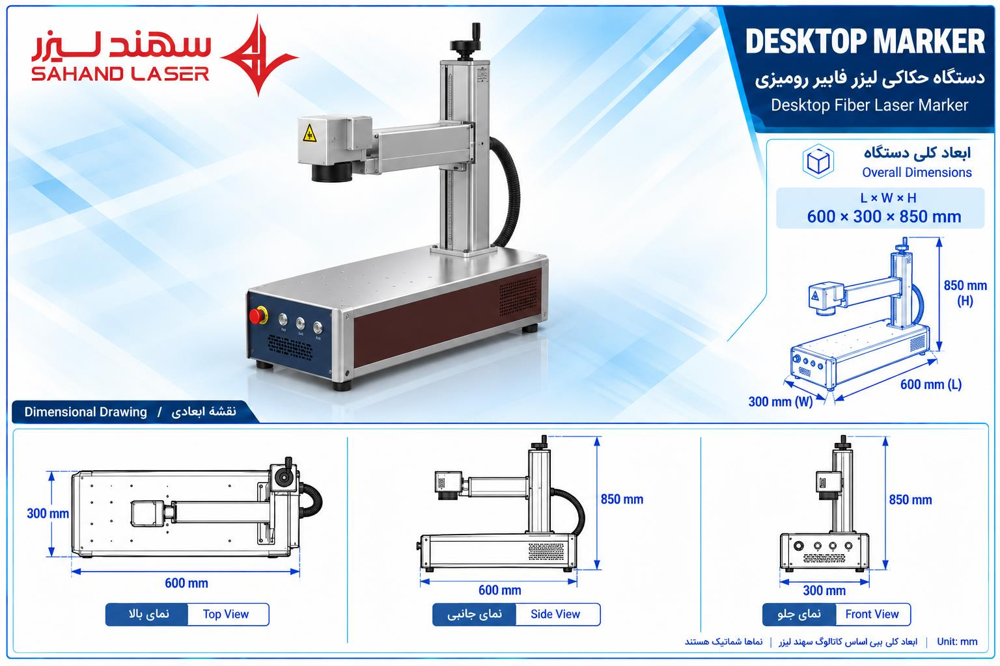
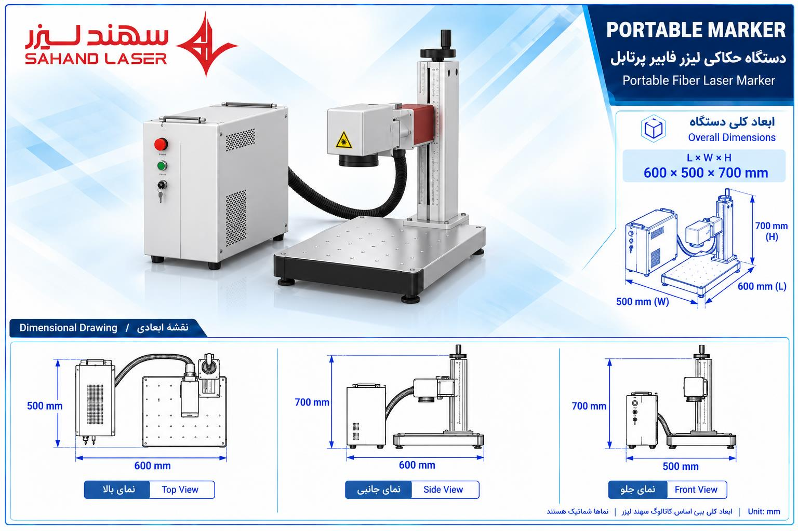
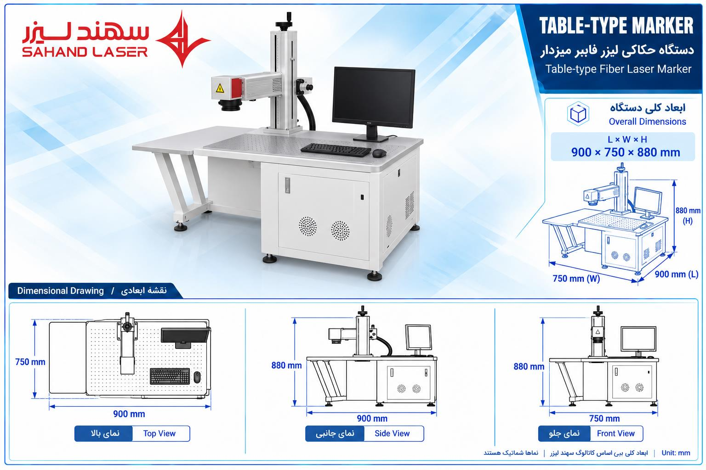
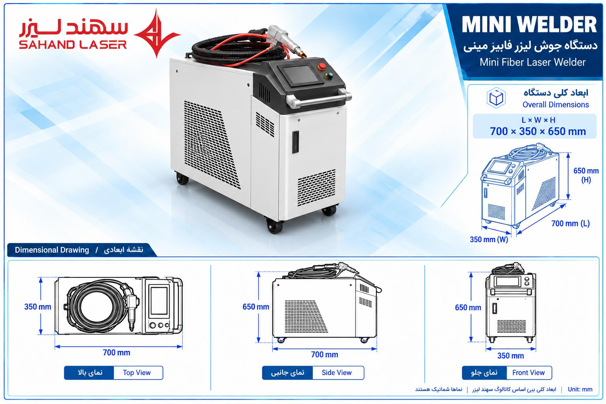
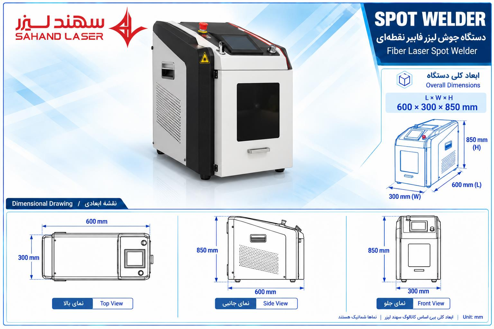
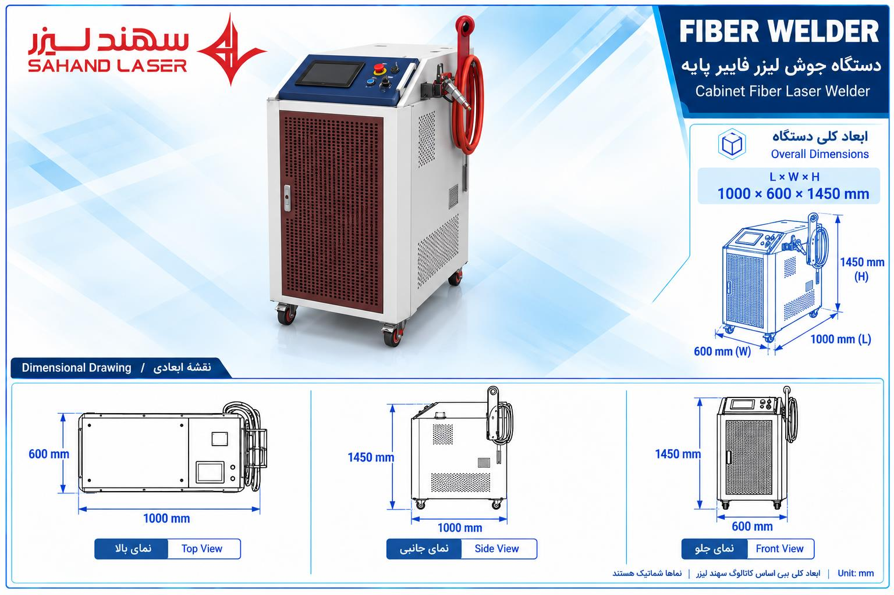
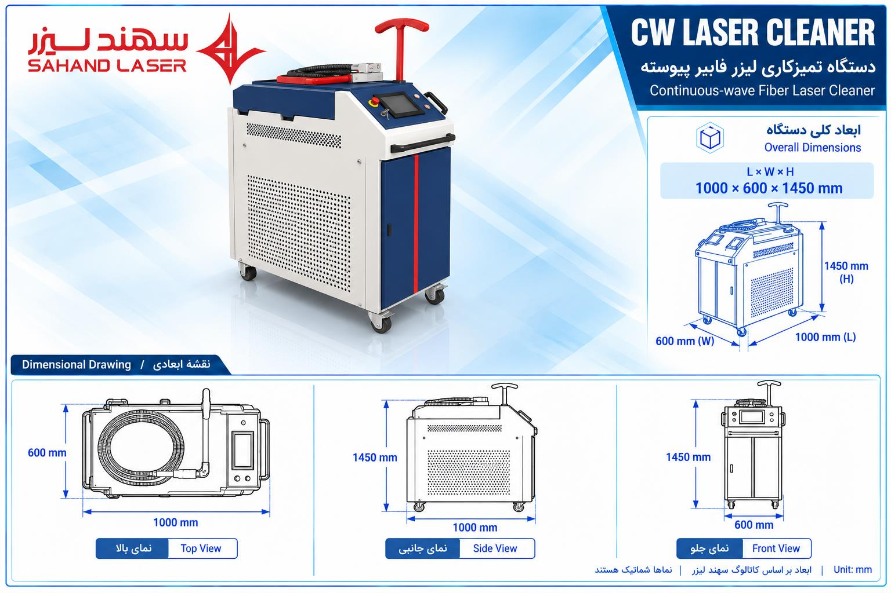

دستگاه برش فایبر تکمیز استاندارد ۳۰۱۵
CUT-3015-1توضیح: طول ۴۹۰۰ × عرض ۲۵۰۰ × ارتفاع ۱۷۰۰ میلیمتر
سهند لیزر · نگاشت مستقیم محصول به نقشهٔ اختصاصی
توضیح: طول ۴۹۰۰ × عرض ۲۵۰۰ × ارتفاع ۱۷۰۰ میلیمتر

توضیح: نقشهٔ کابیندار ۳۰۱۵؛ ابعاد تخمینی

توضیح: نقشهٔ دومیز ۳۰۱۵ با روتاری؛ ابعاد تخمینی

توضیح: نقشهٔ دومیز ۶۰۲۰ با روتاری؛ ابعاد تخمینی

توضیح: نقشهٔ اختصاصی مارکینگ فایبر رومیزی
توضیح: نقشهٔ اختصاصی مارکینگ فایبر رومیزی

توضیح: نقشهٔ اختصاصی مارکینگ فایبر پرتابل

توضیح: نقشهٔ اختصاصی مارکینگ فایبر میزدار

توضیح: نقشهٔ اختصاصی دستگاه جوش فایبر دستی

توضیح: نقشهٔ اختصاصی دستگاه جوش فایبر اتوماتیک

توضیح: نقشهٔ اختصاصی دستگاه جوش فایبر پایهدار

توضیح: نقشهٔ اختصاصی دستگاه تمیزکاری فایبر